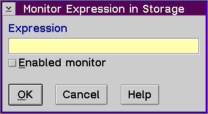

Displays the Monitor Expression in Storage window, which allows you to type in the name of the expression you want to monitor.
To specify an expression, type the name or address of the variable or expression you want to monitor in the Expression entry field.
The expression evaluator used is based on the context. For example if you display the Storage window by selecting the Monitor expression... choice from the Monitors menu, the evaluator used is based on the context in the Monitor Expression window. However, if you display the Storage window first and then select the Monitor expression... choice from the Options menu of the Storage window, the evaluator used is based on the context of the stopping thread.
Note: You cannot look at variables that have been defined using the #DEFINE preprocessor directive. If the variable is not in scope when the monitor is opened, the default address is displayed. If the variable goes out of scope, the address is changed to a hex constant.
If you enable the Enabled monitor check box, the monitor updates the stop value of the program to the actual value in storage. However, a disabled monitor suspends this updating and reflects the stop value or the value held when the monitor was disabled.